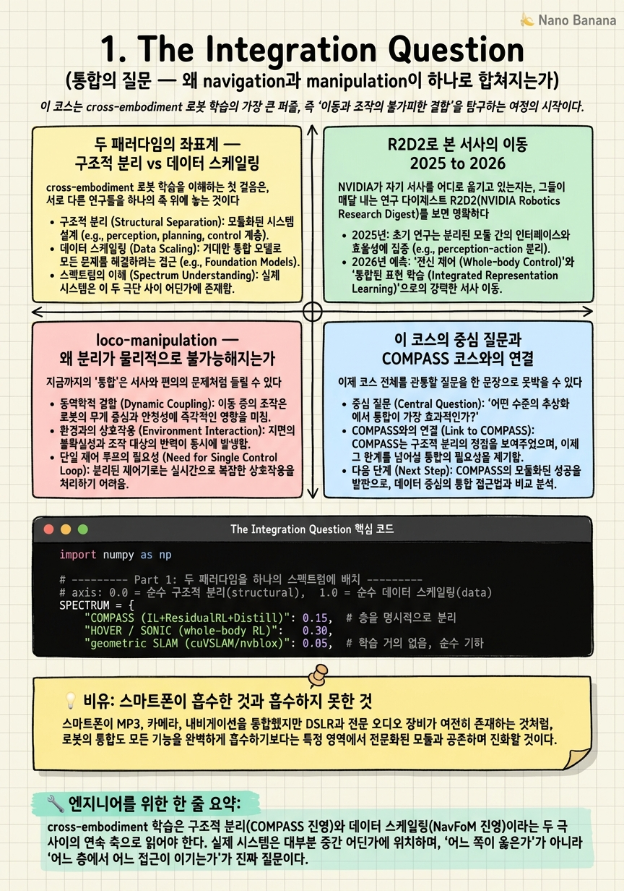

The Integration Question

🎯 학습 목표
- cross-embodiment 로봇 학습의 두 패러다임을 하나의 스펙트럼으로 위치시킬 수 있다
- R2D2 타임라인으로 NVIDIA 서사의 이동(mobility 개별 모델 to 통합 VLA)을 설명할 수 있다
- loco-manipulation이 왜 navigation과 manipulation을 분리 불가능하게 만드는지 안다
- 이 코스의 중심 질문(GR00T가 다 먹는가)을 명확히 진술할 수 있다
- 선행 COMPASS 코스의 결론이 이 코스에서 어떻게 확장되는지 안다
2025년까지 NVIDIA의 로봇 학습 지도는 깔끔하게 분할되어 있었다. 이동(mobility)은 COMPASS·X-Mobility가, 전신 제어(whole-body control)는 HOVER가, 조작(manipulation)은 GR00T N1이 각자 담당했다. 각 모델은 자기 embodiment와 자기 과제에 특화된 specialist였고, 이들을 잇는 것은 사람이 짠 파이프라인이었다. 그런데 2026년 1월 CES에서 공개된 GR00T N1.6은 이 분할선을 흐린다. 하나의 reasoning VLA(Vision-Language-Action) 안에서 '어디로 갈지'를 정하는 navigation의 고수준 의사결정과 '무엇을 어떻게 잡을지'를 정하는 manipulation이 같은 정책의 출력으로 흘러나오기 시작한 것이다.
이 코스의 중심 긴장은 여기서 태어난다. 한쪽 극에는 데이터 스케일링(data scaling) 진영이 있다. NavFoM처럼 802만 샘플을 때려넣어 navigation 자체를 하나의 거대한 foundation model로 흡수하려는 접근이다. 반대 극에는 구조적 분리(structural separation) 진영이 있다. COMPASS처럼 IL·RL·distillation을 계층으로 쪼개고, world model과 geometric localization을 명시적 모듈로 남겨두는 접근이다. GR00T N1.6은 둘 중 하나가 아니라, 데이터 쪽으로 기운 하이브리드다. 합성데이터 공장으로 스케일을 확보하되, Cosmos(뇌)·SONIC(모터)·geometric 스택(위치)을 여전히 계층으로 유지한다.
이 챕터는 그 하이브리드를 읽는 좌표계를 세운다. 먼저 두 패러다임을 대립이 아니라 하나의 연속 스펙트럼으로 배치하고(\(\text{structure} \leftrightarrow \text{data}\)의 축), R2D2(NVIDIA Robotics Research and Development Digest) 시리즈의 2025→2026 진화를 통해 NVIDIA 서사가 '개별 mobility 모델'에서 '통합 인프라'로 이동한 궤적을 추적한다. 그리고 이 통합을 필연으로 만드는 물리적 이유 — loco-manipulation coupling — 을 도입한 뒤, 코스 전체를 관통할 질문을 명확히 진술한다. 이 코스는 COMPASS cross-embodiment 코스의 2026 속편이며, 그 코스가 세운 '구조적 분리' 결론이 데이터 스케일링의 압력 아래서 어떻게 재배치되는지를 추적하는 것이 목표다.
핵심 내용
두 패러다임의 좌표계 — 구조적 분리 vs 데이터 스케일링
cross-embodiment 로봇 학습을 이해하는 첫 걸음은, 서로 다른 연구들을 하나의 축 위에 놓는 것이다. 그 축의 한 끝은 구조적 분리(structural separation), 다른 끝은 데이터 스케일링(data scaling)이다.
구조적 분리 진영은 이렇게 믿는다. 로봇의 능력은 성격이 다른 여러 하위문제(perception, localization, planning, control)로 이루어져 있고, 각 하위문제는 서로 다른 inductive bias를 요구한다. metric localization은 기하(geometry)와 확률적 필터링의 문제이지 언어 추론의 문제가 아니다. 따라서 각 층을 명시적 모듈로 두고, 학습이 잘 통하는 층에만 학습을 쓰는 것이 데이터 효율적이고 검증 가능하다. COMPASS가 대표적이다. imitation learning으로 base policy를 얻고, residual RL로 covariate shift를 메우고, distillation으로 여러 embodiment를 하나로 합치되 — 각 단계는 여전히 분리된 채로 남는다.
데이터 스케일링 진영은 반대로 믿는다. 충분히 크고 다양한 데이터와 충분히 큰 모델이 있으면, 하위문제의 경계는 학습이 알아서 내부에 새긴다. 사람이 손으로 그은 모듈 경계는 오히려 병목이 된다. NavFoM이 802만 샘플로 navigation을 통째로 하나의 foundation model에 밀어넣는 것이 이 극점이다. 언어 명령, 지도, 관측을 모두 하나의 시퀀스로 만들어 end-to-end로 학습하면, point-goal·object-goal·instruction-following이 하나의 정책에서 emergent하게 나온다는 것이다.
두 진영을 표로 대비하면 성격이 선명해진다.
| 축 | 구조적 분리 (COMPASS 진영) | 데이터 스케일링 (NavFoM 진영) |
|---|---|---|
| 핵심 믿음 | 하위문제마다 다른 inductive bias | 스케일이 경계를 학습한다 |
| 모듈 경계 | 사람이 명시적으로 설계 | 학습이 암묵적으로 형성 |
| 데이터 효율 | 높음 (층별 특화) | 낮음 (대량 필요) |
| 검증 가능성 | 층별로 테스트 가능 | 블랙박스, end-to-end 평가 |
| 실패 지점 | 모듈 인터페이스 불일치 | out-of-distribution 붕괴 |
| 대표 시스템 | COMPASS, HOVER, geometric SLAM | NavFoM, 대규모 VLA |
중요한 것은 이 축이 이분법이 아니라 연속 스펙트럼이라는 점이다. 실제 시스템은 대부분 중간 어딘가에 있다. 그리고 GR00T N1.6이 정확히 어디에 찍히는지 — 데이터 쪽으로 기울었지만 Cosmos·SONIC·geometric localization을 계층으로 남긴 하이브리드 — 를 읽어내는 것이 이 코스 전체의 과제다.
R2D2로 본 서사의 이동 2025 to 2026
NVIDIA가 자기 서사를 어디로 옮기고 있는지는, 그들이 매달 내는 연구 다이제스트 R2D2(NVIDIA Robotics Research and Development Digest)를 시간순으로 읽으면 드러난다. R2D2는 그저 논문 모음이 아니라, NVIDIA가 '지금 로봇 학습의 프런티어는 여기'라고 선언하는 편집된 서사다.
2025년 3월의 1편 제목은 'Mobility and Whole-Body Control'이었다. 여기 소개된 것은 COMPASS(cross-embodiment mobility), HOVER(whole-body control), X-Mobility(world-model 기반 navigation)였다 — 모두 mobility에 특화된 개별 모델들이다. 즉 출발점에서 NVIDIA의 관심은 '어떻게 로봇을 잘 움직이게 하는가'라는, 비교적 좁고 embodiment별로 나뉜 문제였다.
이후 월간 연재가 이어지며 초점이 계속 이동한다. 대략적인 궤적은 mobility 개별 모델 → manipulation(GR00T N1 계열) → perception(Isaac ROS·Perceptor) → world foundation model(Cosmos) → 그리고 이 모두를 잇는 통합 인프라다. 2026년 2월의 'Scaling Multimodal Robot Learning with Isaac Lab'에 이르면, 관심의 무게중심은 더 이상 '어떤 개별 모델'이 아니라 '어떻게 대규모로 학습을 돌리는 인프라'로 옮겨가 있다.
이 이동에는 방향성이 있다. 개별 특화 모델(specialist) → 이들을 통합하는 generalist → 그 generalist를 먹여 살리는 데이터·시뮬레이션 인프라. 다시 말해 NVIDIA의 서사 자체가 앞 절의 스펙트럼에서 데이터 스케일링 쪽으로 서서히 미끄러진 것이다. 그 미끄러짐의 도착점 하나가 CES 2026(1월 5일)에서 공개된 GR00T N1.6·SONIC·Cosmos 삼각편대다.
하지만 여기서 성급한 결론을 경계해야 한다. 서사가 데이터 쪽으로 옮겨갔다는 것이 곧 '구조가 사라졌다'는 뜻은 아니다. R2D2의 초점이 인프라로 옮겨간 것과 정확히 같은 시기에, geometric localization 스택(cuVSLAM·nvblox·Nav2)은 여전히 상용 제품으로 별도 트랙에서 살아 있다. 서사의 무게중심과 실제 아키텍처의 구조는 다른 층위의 이야기이며, 이 코스는 그 간극을 파고든다.
loco-manipulation — 왜 분리가 물리적으로 불가능해지는가
지금까지의 '통합'은 서사와 편의의 문제처럼 들릴 수 있다. 그러나 통합을 필연으로 만드는 물리적 이유가 있다. loco-manipulation — locomotion과 manipulation을 하나의 coupled whole-body task로 다뤄야 하는 상황이다.
정의부터 하자. loco-manipulation이란 걸어가며 잡기, 문을 밀며 통과하기, 무거운 물체를 든 채 균형을 유지하며 이동하기처럼, 이동과 조작이 시간적으로 겹치고 물리적으로 서로에게 힘을 가하는 과제를 말한다. 여기서 팔의 움직임과 다리의 움직임은 독립 변수가 아니다.
왜 분리가 불가능한지는 역학으로 설명된다. 휴머노이드가 팔을 뻗어 물건을 잡는 순간, 팔의 질량과 물건의 무게가 로봇 전체의 무게중심(center of mass)을 이동시킨다. 무게중심이 지지 다각형(support polygon)을 벗어나면 로봇은 넘어진다. 따라서 팔이 어떻게 움직이느냐는 곧 다리가 어떻게 균형을 잡아야 하느냐를 결정한다. 반대도 성립한다. 걷는 리듬이 상체를 흔들면 손끝(end-effector)의 목표 위치가 흔들려 조작 정밀도가 무너진다. 상태를 함께 묶으면 대략 \(s = [\,q_{\text{base}},\ q_{\text{legs}},\ q_{\text{arms}},\ \dot{q},\ p_{\text{CoM}}\,]\)이고, 다리와 팔의 토크는 같은 동역학 \(M(q)\ddot{q} + C(q,\dot{q})\dot{q} + g(q) = \tau\) 안에서 관성행렬 \(M(q)\)의 off-diagonal 항을 통해 서로 커플링된다.
이 커플링이 통합 아키텍처를 강제한다. navigation 정책이 '앞으로 3미터'를 출력하고 manipulation 정책이 '오른손을 앞으로'를 독립적으로 출력하면, 둘의 합이 로봇을 넘어뜨릴 수 있다. 두 정책 사이를 사람이 짠 규칙으로 조정(coordinate)하는 것은 조합 폭발에 부딪힌다. 그래서 하나의 정책이 base·legs·arms를 함께 보고 whole-body로 출력해야 한다. GR00T N1.6이 navigation과 manipulation을 같은 VLA 출력으로 흘려보내는 근본 동기가 바로 이 물리적 커플링이다.
다만 커플링이 '모든 층을 하나로 녹여야 한다'는 뜻은 아니라는 점이 이 코스의 핵심 반전이다. 무게중심 균형 같은 저수준 whole-body 제어는 SONIC 같은 RL controller가, '어느 방으로 갈지'라는 고수준 의사결정은 VLA가, '지금 정확히 어디 있는지'라는 metric localization은 여전히 geometric 스택이 담당한다. coupling은 통합의 필요를 만들지만, 어느 층까지 통합할지는 여전히 설계 선택이다.
이 코스의 중심 질문과 COMPASS 코스와의 연결
이제 코스 전체를 관통할 질문을 한 문장으로 못박을 수 있다. GR00T는 데이터로 navigation과 manipulation을 다 먹는가, 아니면 구조적 분리가 여전히 필요한가?
이 질문이 흥미로운 이유는 답이 '둘 다 아니오'이면서 '둘 다 예'이기 때문이다. GR00T N1.6은 순수 데이터 스케일링(NavFoM식으로 모든 것을 하나의 정책에 녹이기)도 아니고, 순수 구조적 분리(COMPASS식으로 모든 층을 손으로 나누기)도 아니다. 그것은 세 요소의 하이브리드다 — (1) 합성데이터 공장(Isaac Sim/Lab·Cosmos Transfer)으로 스케일을 확보하고, (2) Cosmos(뇌) to VLA(정책) to whole-body RL(모터)의 계층 아키텍처를 유지하며, (3) COMPASS 같은 specialist를 죽이지 않고 generalist를 먹이는 distillation 데이터원으로 재배치한다.
특히 navigation에 관해 이 코스가 주장하는 경계선은 정밀하다. GR00T가 흡수한 것은 navigation의 고수준 의사결정(어디로 갈지, 어떤 목표를 향할지)이지, metric localization(내가 지금 좌표 상 정확히 어디 있는지)이 아니다. 후자는 여전히 cuVSLAM·nvblox·Nav2 같은 geometric 스택이 담당한다. 즉 학습이 삼킨 층과 엔지니어링이 지탱하는 층 사이에는 여전히 또렷한 선이 그어져 있으며, 그 선을 정확히 긋는 것(8장)이 이 코스의 클라이맥스다.
이 지점에서 선행 COMPASS cross-embodiment 코스와의 연결이 분명해진다. COMPASS 코스의 결론은 '구조적 분리가 cross-embodiment mobility를 데이터 효율적으로 푼다'였다. 이 코스는 그 결론을 폐기하지 않는다. 대신 데이터 스케일링의 압력이 극에 달한 2026년에도 그 구조가 어떻게 살아남아 재배치되는지 — COMPASS가 독립 제품에서 데이터 엔진으로(2장), HOVER가 SONIC으로(6장), geometric localization이 상용 트랙으로(8장) — 를 추적한다.
따라서 이 코스를 관통하는 태도는 '데이터냐 구조냐'라는 양자택일을 거부하는 것이다. 진짜 질문은 이분법이 아니라 경계 짓기다. 어느 층에서 데이터 스케일링이 이기고, 어느 층에서 구조가 버티며, 그 경계는 왜 거기에 그어지는가. 이 좌표계를 손에 쥔 채 나머지 아홉 챕터를 항해하게 된다.
💡 비유로 이해하기
2007년 이전, 우리 가방에는 전문 장비가 여럿 들어 있었다. 디지털 카메라, MP3 플레이어, 내비게이션, 계산기, 손전등, 녹음기. 각각은 자기 일에 특화된 specialist였다. 스마트폰은 이 대부분을 하나의 기기로 흡수했다. 이것이 '데이터 스케일링'이 약속하는 통합의 직관이다 — 충분히 강력한 하나의 플랫폼이 여러 전문 기기를 대체한다.
하지만 흡수가 균일하지 않았다는 사실이 이 코스의 진짜 교훈이다. 스마트폰은 콤팩트 카메라, MP3, 내비게이션 같은 '소프트웨어와 범용 센서로 충분한' 기능은 완전히 삼켰다. 반면 물리 법칙에 단단히 묶인 기능들은 삼키지 못했다. 프로 사진가는 여전히 큰 이미지 센서와 광학 렌즈가 달린 DSLR을 쓴다. 물리적 조리개 크기와 센서 면적이 만드는 화질은 소프트웨어가 흉내 낼 수 없기 때문이다. 정밀 측량은 여전히 전용 GPS·RTK 장비를 쓴다. 센티미터 단위 metric 정확도는 범용 칩으로 안 나온다.
GR00T N1.6이 정확히 이 스마트폰이다. '어디로 갈지 정하고 무엇을 잡을지 추론하는' 고수준 인지 기능 — 소프트웨어와 학습으로 충분한 층 — 은 하나의 reasoning VLA로 흡수했다. 그러나 '지금 내가 좌표 상 정확히 어디 있는가'라는 metric localization은, DSLR과 RTK GPS가 그렇듯, 여전히 물리와 기하에 묶인 전용 스택(cuVSLAM·nvblox)에 남겨두었다. 통합의 승리가 어디까지이고 전문 장비가 어디서 버티는가 — 스마트폰 가방을 열어보는 것이, GR00T의 아키텍처 경계선을 읽는 가장 정확한 비유다.
💻 코드 예시
개념을 코드로 붙잡아 보자. 두 가지를 보인다. 첫째, 여러 시스템을 (구조 ↔ 데이터) 스펙트럼 좌표에 배치해 GR00T가 하이브리드로서 '중간에서 데이터 쪽으로 기운' 위치를 시각화한다. 둘째, loco-manipulation이 왜 coupled인지를, 팔의 움직임이 무게중심을 통해 다리의 균형에 영향을 주는 최소 상태공간 스케치로 보인다. 두 번째 예시의 핵심은 관성행렬 \(M(q)\)의 off-diagonal 항이 0이 아니라는 것 — 그것이 바로 '분리 불가능'의 수학적 정체다.
import numpy as np
# ---------- Part 1: 두 패러다임을 하나의 스펙트럼에 배치 ----------
# axis: 0.0 = 순수 구조적 분리(structural), 1.0 = 순수 데이터 스케일링(data)
SPECTRUM = {
"COMPASS (IL+ResidualRL+Distill)": 0.15, # 층을 명시적으로 분리
"HOVER / SONIC (whole-body RL)": 0.30,
"geometric SLAM (cuVSLAM/nvblox)": 0.05, # 학습 거의 없음, 순수 기하
"GR00T N1.6 (hybrid VLA)": 0.70, # 데이터 쪽으로 기운 하이브리드
"NavFoM (8.02M samples)": 0.95, # 거의 순수 데이터 스케일링
}
def place(name, x):
bar = "structure |" + "-" * int(x * 40) + "o" + "-" * (40 - int(x * 40)) + "| data"
print(f"{name:34s} {x:.2f} {bar}")
for name, x in sorted(SPECTRUM.items(), key=lambda kv: kv[1]):
place(name, x)
# ---------- Part 2: loco-manipulation이 coupled임을 보이는 스케치 ----------
# 상태: base 위치, 다리 각도, 팔 각도 -> 무게중심(CoM)은 셋 모두의 함수
def center_of_mass(q_base, q_legs, q_arms, m_arm=3.0, payload=2.0):
# 팔을 뻗을수록(q_arms 증가) CoM이 앞으로 이동한다 -> 균형에 직접 영향
reach = np.sin(q_arms) * (m_arm + payload)
return q_base + 0.1 * q_legs + 0.25 * reach
# 관성행렬 M(q): off-diagonal이 0이 아니면 다리-팔이 커플링되어 분리 불가
def inertia_matrix(q_arms):
coupling = 0.4 * np.cos(q_arms) # 팔 자세가 다리 동역학에 새는 항
return np.array([[1.0, coupling], # [legs-legs, legs-arms]
[coupling, 0.6 ]]) # [arms-legs, arms-arms]
for q_arms in [0.0, np.pi/4, np.pi/2]:
com = center_of_mass(q_base=0.0, q_legs=0.2, q_arms=q_arms)
M = inertia_matrix(q_arms)
print(f"arm={q_arms:.2f}rad CoM={com:+.3f} off-diag(M)={M[0,1]:+.3f}")
# off-diag가 0이 아닌 한, '다리 정책'과 '팔 정책'을 따로 최적화하면
# 두 출력의 합이 로봇을 넘어뜨릴 수 있다 -> whole-body 통합 정책이 필요.Part 1은 이 챕터의 좌표계를 그대로 코드화한다. 각 시스템에 0(순수 구조) ~ 1(순수 데이터) 값을 부여하고 텍스트 막대로 위치를 찍는다. geometric SLAM은 0.05로 거의 학습이 없는 순수 기하 스택, NavFoM은 0.95로 데이터 극점, 그리고 GR00T N1.6은 0.70 — 데이터 쪽으로 분명히 기울었지만 극점은 아닌 하이브리드다. 이 한 줄의 배치가 코스 전체의 논지를 압축한다: 통합은 이분법이 아니라 스펙트럼 위의 위치 선택이다.
Part 2는 loco-manipulation coupling을 수치로 만진다. center_of_mass에서 팔 각도 \(q_{\text{arms}}\)가 커질수록(팔을 뻗을수록) \(\sin(q_{\text{arms}})\) 항을 통해 무게중심이 앞으로 이동한다. 즉 팔의 조작 동작이 다리가 지탱해야 할 균형 조건을 직접 바꾼다. inertia_matrix의 off-diagonal 항 \(0.4\cos(q_{\text{arms}})\)가 이 커플링의 정체다. 실행하면 팔 각도가 변할 때 CoM과 off-diagonal 값이 함께 움직이는 것을 볼 수 있다.
핵심 통찰은 마지막 주석에 있다. off-diagonal이 0이 아닌 한, '다리 정책'과 '팔 정책'을 독립적으로 최적화한 뒤 출력을 더하는 방식은 원리적으로 위험하다 — 두 국소 최적해의 합이 전역적으로 로봇을 넘어뜨릴 수 있다. 이것이 GR00T가 base·legs·arms를 하나의 whole-body 정책으로 묶는 물리적 이유이며, 동시에 '그렇다면 metric localization은 왜 안 묶었는가'라는 8장의 질문으로 이어지는 다리다. localization은 이 동역학 커플링 바깥에 있는, 분리해도 안전한 층이기 때문이다.
🏭 현업에서의 평가
✅ 시니어가 보는 것
- 통합/end-to-end 같은 유행어를 스펙트럼(구조 ↔ 데이터)이라는 축으로 분해해 특정 시스템의 좌표를 짚어내는 능력
- loco-manipulation coupling을 무게중심과 관성행렬 off-diagonal 같은 역학 언어로 설명하고, 그로부터 whole-body 통합의 필요를 유도하는 능력
- '무엇이 흡수됐고 무엇이 안 됐는가'를 구분하는 감각 — 특히 고수준 navigation 의사결정과 metric localization을 다른 층으로 다루는 것
- R2D2 같은 벤더 서사의 무게중심 이동과 실제 배포 아키텍처를 서로 다른 층위로 구분해 읽는 태도
- 데이터냐 구조냐를 양자택일이 아니라 층별 경계 짓기 문제로 재정의하는 프레이밍
⚠️ 레드 플래그
- GR00T N1.6을 '모든 것을 데이터로 학습한 하나의 flat end-to-end 정책'이라고 단정하는 것
- 데이터 스케일링과 구조적 분리를 서로 배타적인 두 진영으로만 보고 하이브리드 가능성을 놓치는 것
- loco-manipulation을 그냥 '걸으면서 잡기'라고만 말하고 왜 물리적으로 분리 불가능한지(무게중심·동역학 커플링)를 대지 못하는 것
- navigation이 통째로 학습에 흡수됐다고 주장하며 metric localization(cuVSLAM/nvblox)이 여전히 geometric임을 모르는 것
- NVIDIA 마케팅 서사를 그대로 사실로 인용하며 서사와 아키텍처의 간극을 비판적으로 보지 못하는 것
🎤 예상 인터뷰 질문
- cross-embodiment 로봇 학습의 '데이터 스케일링'과 '구조적 분리' 두 접근을 하나의 스펙트럼으로 설명하고, COMPASS·NavFoM·GR00T N1.6을 그 축 위에 각각 배치한 뒤 그 위치를 정당화해 보라.
- loco-manipulation이 navigation과 manipulation을 왜 분리 불가능한 coupled 문제로 만드는지 역학(무게중심, 관성행렬 off-diagonal) 관점에서 설명하라. 그런데도 GR00T가 metric localization은 통합하지 않은 이유는 무엇인가?
- 'GR00T는 데이터로 navigation을 다 흡수했다'는 주장을 반박하거나 지지하라. 흡수된 층과 안 된 층을 구체적으로 나누고, 그 경계가 왜 거기에 그어지는지 논증하라.
✨ 핵심 요약
통합은 이분법이 아니라 스펙트럼이다
cross-embodiment 학습은 구조적 분리(COMPASS 진영)와 데이터 스케일링(NavFoM 진영)이라는 두 극 사이의 연속 축으로 읽어야 한다. 실제 시스템은 대부분 중간 어딘가에 위치하며, '어느 쪽이 옳은가'가 아니라 '어느 층에서 어느 접근이 이기는가'가 진짜 질문이다.
GR00T N1.6은 데이터 쪽으로 기운 하이브리드다
GR00T는 순수 데이터 스케일링도 순수 구조적 분리도 아니다. 합성데이터 공장으로 스케일을 얻고(데이터), Cosmos-VLA-whole-body RL의 계층을 유지하며(구조), COMPASS 같은 specialist를 distillation 데이터원으로 재배치한 세 요소의 하이브리드다.
R2D2 서사는 개별 모델에서 통합 인프라로 이동했다
R2D2는 2025.03 'Mobility and Whole-Body Control'(COMPASS·HOVER·X-Mobility)에서 시작해 2026.02 'Scaling Multimodal Robot Learning with Isaac Lab'까지, specialist 모델에서 이들을 먹여 살리는 데이터·시뮬 인프라로 무게중심을 옮겼다.
서사의 무게중심과 실제 아키텍처는 다른 층위다
R2D2 초점이 데이터 인프라로 옮겨간 것과 동시에, geometric localization 스택(cuVSLAM·nvblox·Nav2)은 상용 제품으로 별도 트랙에 살아 있다. 벤더 서사가 데이터로 기울었다고 구조가 사라진 것은 아니다.
loco-manipulation coupling은 물리적 필연이다
팔을 뻗으면 무게중심이 이동해 다리의 균형 조건이 바뀌고, 걷는 진동은 손끝 정밀도를 무너뜨린다. 관성행렬 M(q)의 off-diagonal 항이 0이 아니므로 다리 정책과 팔 정책을 따로 최적화해 더하는 것은 원리적으로 위험하다 — whole-body 통합 정책이 강제된다.
coupling은 통합의 필요를 만들지만 범위는 설계 선택이다
동역학 커플링은 base·legs·arms를 하나로 묶으라고 강제하지만, 그 커플링 바깥에 있는 metric localization까지 묶으라고 강제하지는 않는다. 어느 층까지 통합할지는 여전히 엔지니어의 경계 짓기 결정이다.
흡수된 것과 안 된 것을 나눠라 — navigation의 경계선
GR00T가 흡수한 것은 navigation의 고수준 의사결정(어디로 갈지)이지 metric localization(좌표 상 정확한 위치)이 아니다. 후자는 여전히 geometric 스택이 담당한다. 스마트폰이 카메라는 삼켰지만 RTK GPS 정밀도는 못 삼킨 것과 같다.
이 코스는 COMPASS 코스의 2026 속편이다
중심 질문은 'GR00T가 데이터로 다 먹는가, 아니면 구조적 분리가 여전히 필요한가'다. COMPASS 코스의 '구조적 분리' 결론을 폐기하지 않고, 데이터 스케일링 압력 아래서 그 구조가 데이터 엔진으로·SONIC으로·상용 트랙으로 재배치되며 살아남는 과정을 추적한다.